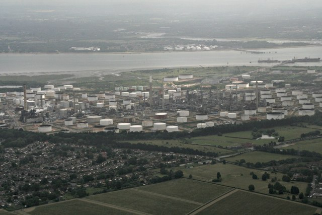

@firstsquawk, citing The Wall Street Journal, reported on 27 October that oil was retreating amid a renewed diplomatic push involving Washington and Tehran. Direct talks and an agreement remain unconfirmed in the relayed account.
Reuters' 21 October oil-market report described an absence of US-Iran dialogue. The later relay could refer to an effort to bring the sides together rather than talks already under way; the two reports do not establish a continuing negotiation or a diplomatic breakthrough.
If the reported effort delivers a durable reduction in tensions, it could ease concern about future oil-supply disruption. Evidence of changes in production or exports would still be needed before treating it as physical supply relief.
Watch for identified participants, a meeting date and concrete terms. Those would help distinguish a diplomatic push from substantive negotiations. A change in oil production or exports would need separate evidence; the reported oil retreat alone cannot demonstrate it.
Sources
Reporting as of 11:00 Bangkok on 27 October 2026. FirstSquawk, citing The Wall Street Journal (27 October); Reuters (21 October), via Yahoo Finance.
Analysis, not financial advice.